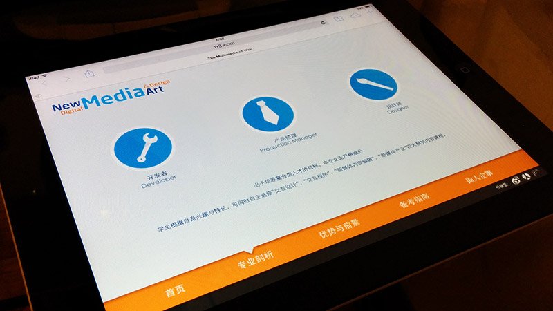

-
BusyWeek!

-
- A time-based Todo-list App with simple design, which is a side-project of mine
- Worked with Vue, a Front-End MVVM Framwork
- Worked with workflow based on Sass, Git, Shell, Grunt
- Use HTML5 & CSS3 features including AppCache, LocalStorage, CSS3 Trasition/Transform and Flexbox
- Worked on a iOS Native-App Version
- JS Link
-
-
Internship in AliTrip

-
- 负责「阿里旅行·去啊」无线端的 H5 开发
- 参与了拥有数万行 JavaScript 的 Mobile Web App 编写工作
- 参与了阿里集团内 Hybrid 容器共建的适配工作（包括离线包、JS桥）
- 参与了 H5 性能 & 渲染优化工作，提供非阻塞 UI 框架渲染解决方案
- 参与了团队 CSS 库建设，提供 CSS 3 动效设计方案
- Title : 前端工程师 Intern
- JS AliTrip
-
-
Internship in Alibaba Group

- 大二下时通过实习生招聘拿到 Intern Offer, 后因部门不满意 transfer 去了前端岗，负责了阿里校招网站的 PC 版重设计和第一次 Mobile 设计
- Title : 交互设计师 Intern
- Ax Ps
-
L.esson

- 一天完成的《多媒体交互设计二》结课作业而已。作业要求是一个「选中三门课才可提交」的选课系统。使用了 Parse 作为数据后端，使用 Backbone.js 完成前端 MVC 逻辑。主要尝试了在 Mobile-Web 中实现 Navigation Drawer 和部分 Material Design 。
- Responsible : Front-End , Design
- JS Link
-
2014贺卡生成器

- 作为 中国传媒大学校学生会网络推广部副部长 与 校学生会宣传部 合作完成的学生会内工作，使用了 Html5 Canvas 及相关的库，优先保证移动端环境（包括微信）与现代浏览器环境的可用性。
- Responsible : Front-End , Product
- JS Link
-
SENOVA WebApp

- 《多媒体交互设计一》结课作业，以北汽“绅宝”为目标品牌，iPad 为主要平台进行的 App 设计，旨在用一种可交互的方式介绍“绅宝”车型。完全采用 Html5 技术开发，可添加至主屏幕离线运行。着力于触控交互体验的优化与优雅的动画设计。
- Responsible : Front-End，Interaction，Product
- Partner : ZOE-张瑜
- JS Link
-
第十届首都高校“风采之星”才艺选拔大赛决赛投票专区

- 作为校学生会网络推广部委员完成的学生会内工作，从设计最初就考虑了响应式设计，移动优先，所有动画优先由 CSS3 驱动，并尝试了 Metro 风格的 UI 设计。
- Responsible : All (Design & Front-End)
- Ps JS Link
-
《真相不止一个》

- 第一个商业 Motion Graphic ，一档网络节目的片头包装。虽然最后不幸“被飞机稿”，但仍是目前为止质量最高的 MG 作品。
- Responsible : Motion Graphic Design
- Partner : Psycho-俞宸睿
- Ai Ae View
-
Internship in LxU Studio

- 于大一暑假在信息可视化设计工作室 LxU Studio 实习，参与了2个“百度”视频项目，1个“德国马牌轮胎”多媒体项目。
- Title : Motion动画师
- Ai Ae @LxU
-
《Puzzle Hybrid》

- 《设计基础》结课作业，谜之规律的混合了 serif 与 sans-serif，同时添加了斑马纹装饰，故取名“谜之混搭”……动态展示视频见下方 View 链接。
- Ps Ae View
-
New Media Art & Design
- 《网站基础》结课作业，为我所就读的“新媒体艺术设计系”做网站概念设计。Single-Page Minisite，结合使用了 CSS3 Transition 与 jQuery Animate ，自适应布局，尝试达到 App-like 级别的网站体验。
- Responsible : Front-End，Intercation，Product
- Partner : ZOE-张瑜 , 徐婷
- JS Demo
-
UI Design《Home》

- 有幸加入10级师哥师姐 黄毅，聂芮杰 的团队中，一起参加并取得了“第七届全国信息技术应用水平大赛中兴智能终端创意团体赛 UI 组”全国一等奖。
- Responsible : Interaction Animation Design
- Fl News

A student major in Web & Mobile,
focus on UI Development, UX Design and Motion Graphic.